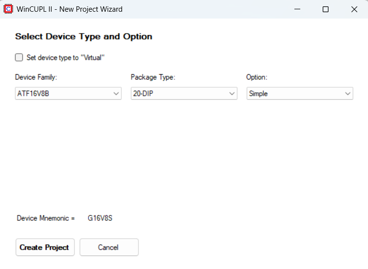
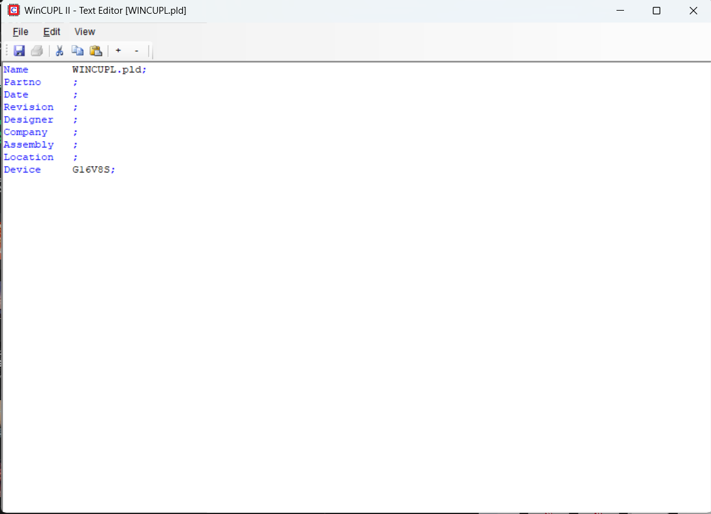
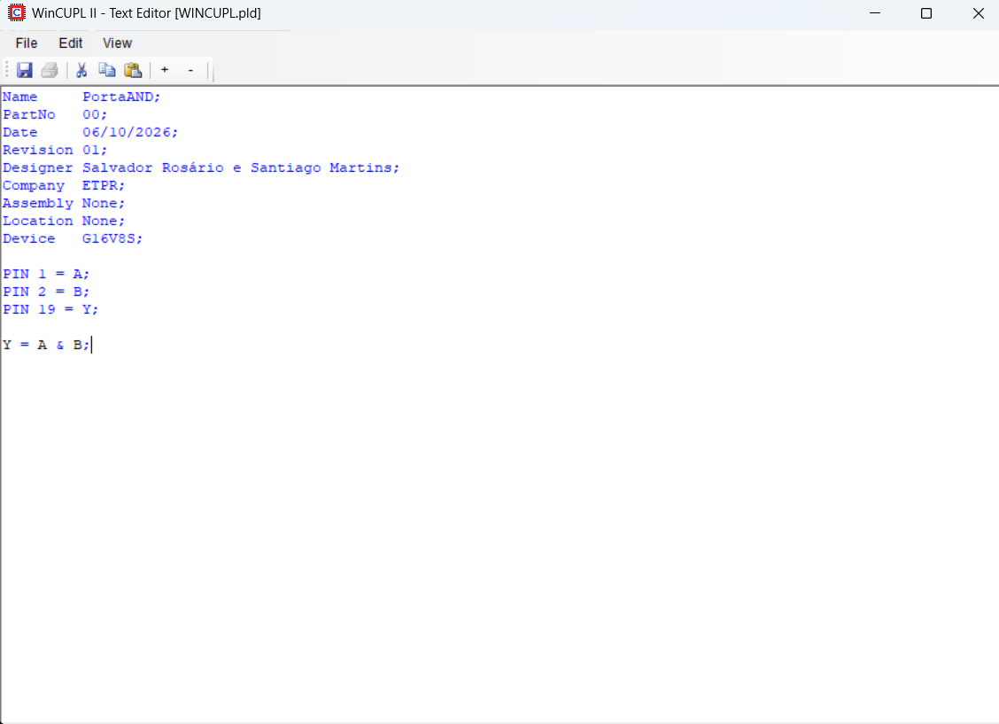
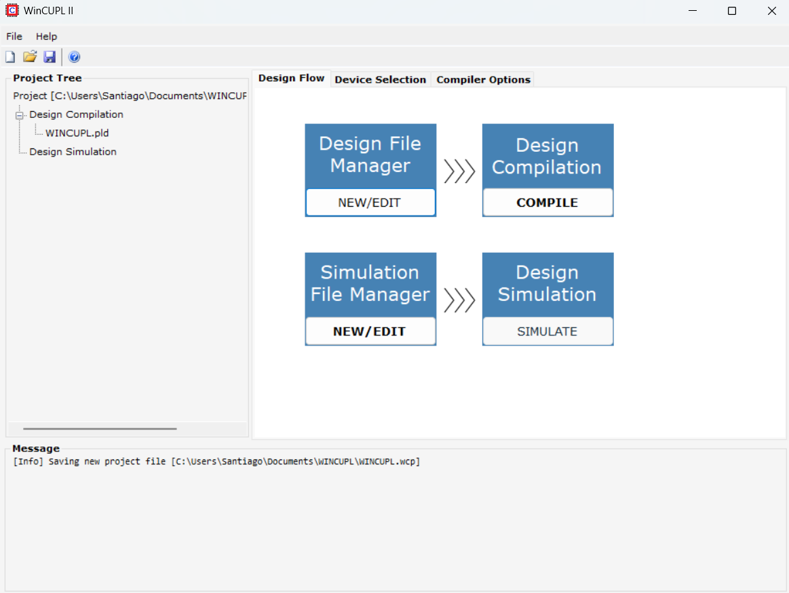
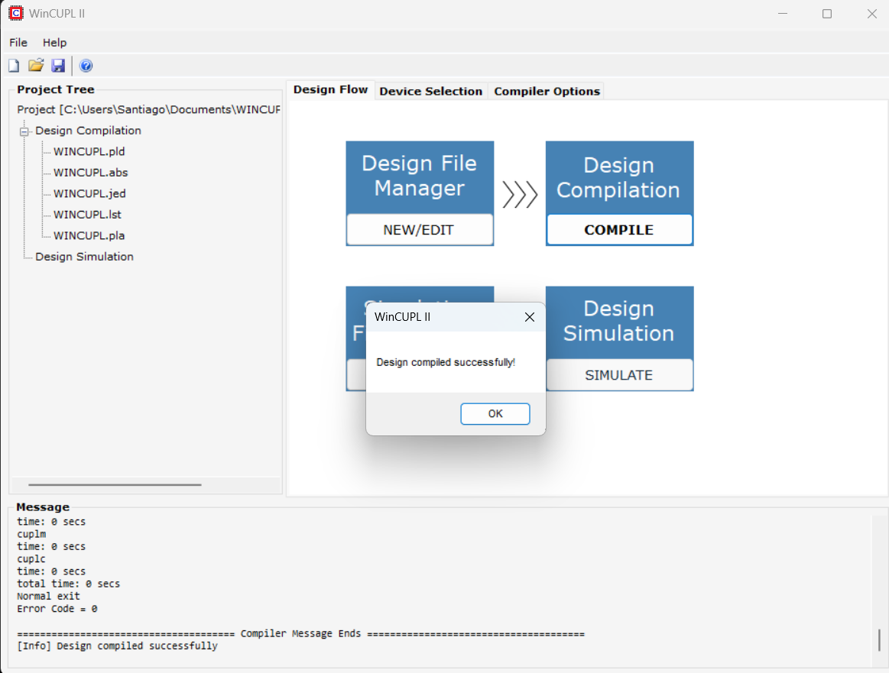

Introdução
Neste trabalho apresentamos os passos que seguimos para instalar o WinCUPL, criar um projeto simples e verificar a sua compilação.
O projeto foi realizado por Salvador Rosário e Santiago Martins, do 11.º TGEI.
01
Instalação do WinCUPL
Primeiro fizemos o download do WinCUPL e iniciámos a instalação. Seguimos os passos apresentados pelo instalador até terminar.

Instalação do WinCUPL.
Depois de terminar a instalação, abrimos o programa para começar a criação do projeto.
02
Criação do projeto
Criámos um novo projeto através do WinCUPL. Na seleção do dispositivo utilizámos o ATF16V8B, com o package 20 DIP e a opção Simple.

Seleção do dispositivo utilizado no projeto.
Depois criámos o ficheiro de design e colocámos os dados necessários para o projeto.

Criação do projeto no WinCUPL.
03
Código utilizado
O projeto representa uma porta lógica AND. Foram definidas duas entradas, A e B, e uma saída Y.

Código utilizado no projeto.
Funcionamento
A saída Y só fica ativa quando as duas entradas, A e B, estão ativas.
| A | B | Y |
|---|---|---|
| 0 | 0 | 0 |
| 0 | 1 | 0 |
| 1 | 0 | 0 |
| 1 | 1 | 1 |
04
Compilação
Depois de escrever o código, guardámos o projeto e fizemos a compilação para verificar se existiam erros.

Resultado da compilação.
Error Code: 0
A compilação foi concluída com sucesso e não foram encontrados erros no projeto.
05
Problema encontrado
Durante a primeira compilação apareceu um erro relacionado com um carácter acentuado no nome do Designer.

Erro apresentado durante a primeira compilação.
Para resolver o problema retiramos o acento da palavra “Rosário”, ficando “Rosario”. Depois voltámos a compilar o projeto e a compilação foi realizada com sucesso.
06
Conclusão
Com este trabalho aprendemos a instalar e utilizar o WinCUPL para criar e compilar um projeto simples. Também aprendemos a identificar e corrigir um erro no código. A principal dificuldade foi perceber alguns dos passos do programa, mas conseguimos terminar o projeto e compilá-lo sem erros.
07
Fontes
Nesta parte devem colocar as páginas que consultaram durante a realização do trabalho.
Substituam as fontes acima pelas ligações que realmente utilizaram.